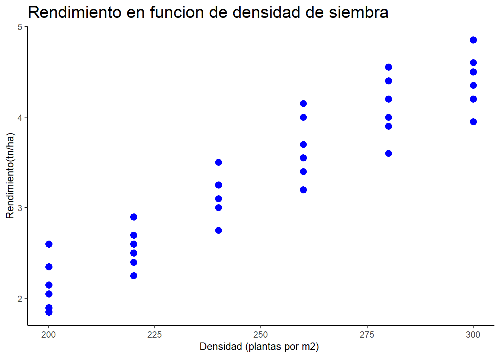
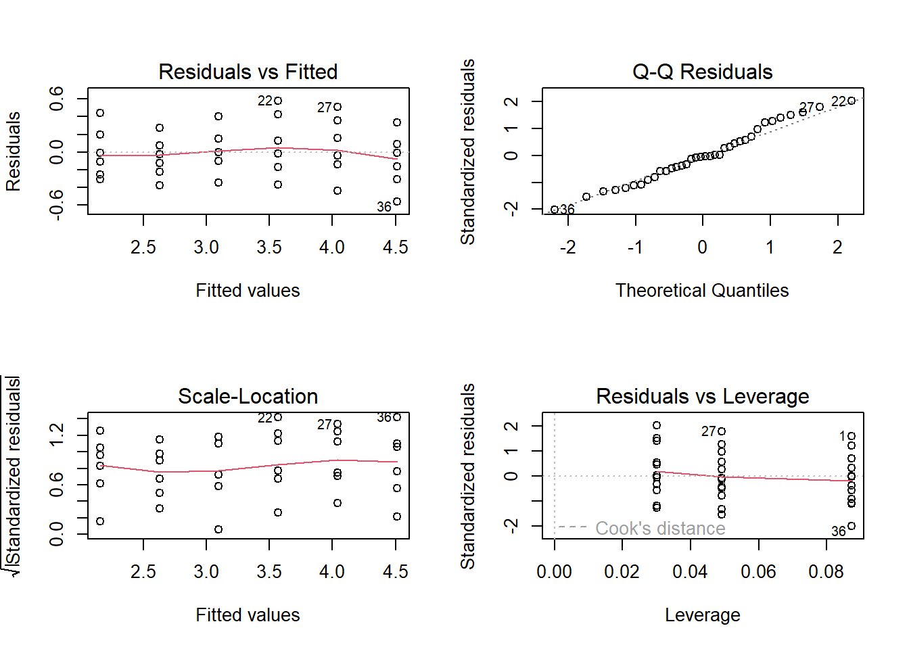

El Modelo Lineal General describe la relación entre una variable de respuesta aleatoria, \(Y\), y una o más variables explicativas, que pueden ser numéricas y/o categóricas.
En este modelo se asume que:
La variable respuesta es cuantitativa y sigue una distribución Normal: \(Y∼N(μ_Y,σ^2_Y)\)
Su media, \(\mu_Y\), se expresa como una combinación lineal de las variables explicativas:
\[μ_Y=β_0+β_1X_1+β_2X_2+⋯+β_kX_K\]
La variabilidad alrededor de esa media se representa mediante un error aleatorio:
\[Y=β_0+β_1X_1+β_2X_2+⋯+β_kX_K+\varepsilon_1 \ con \ \varepsilon_i∼N(0,σ^2)\]
Los parámetros \(\beta_i\) y \(\sigma^2\) se estiman a partir de los datos.
Así, la prueba t de medias, los distintos ANOVA, la regresión lineal simple y la regresión lineal múltiple pueden entenderse como casos particulares del Modelo Lineal General.
1.1 Protocolo para realizar un análisis estadístico completo
Antes de trabajar con cualquier programa estadístico, es importante reconocer que un análisis estadístico no consiste solamente en ajustar un modelo y observar un valor p. Es un proceso que parte de una pregunta de investigación y finaliza con la interpretación de los resultados en su contexto.
Para organizar ese proceso, seguiremos el siguiente protocolo:
Plantear la pregunta de investigación y las hipótesis
Se parte de una pregunta o hipótesis científica y se la traduce en hipótesis estadísticas sobre los parámetros del modelo.
Explicitar el modelo estadístico
Se define cuál es la variable respuesta, cuáles son las variables explicativas y qué supuestos se realizan sobre los datos.
Realizar un análisis exploratorio de los datos
Se estudia la distribución de las variables, se calculan estadísticas descriptivas y se elaboran gráficos para explorar la relación entre la respuesta y las variables explicativas.
Estimar los parámetros del modelo
Se obtienen las estimaciones de los parámetros, sus intervalos de confianza del 95 %, medidas de calidad de ajuste y, cuando corresponda, medidas de magnitud del efecto.
Validar el modelo ajustado
Se evalúa si los supuestos del modelo son razonables. En regresión lineal, una herramienta fundamental es el análisis de los residuos.
Interpretar y comunicar los resultados
Los resultados se interpretan en relación con la pregunta inicial. La comunicación debe incluir tablas, gráficos y conclusiones expresadas en el contexto del problema, no solo resultados numéricos.
Vemaos como se aplica todo el protocolo a un ejemplo de regresión lineal linal simple para ello consideremos de la base de datos
1.2 Regresión lineal simple
Para comprender cómo se estiman los parámetros del Modelo Lineal General, consideremos el caso más simple: la regresión lineal simple (RLS).
En este caso se estudia la relación entre una variable respuesta cuantitativa \(Y\) y una única variable explicativa numérica \(X\):
\[Y_i=\beta_0+\beta_1X_i+\varepsilon_i\]
donde:
\(\beta_0\) es el parámetro que caracterziza la ordenada al origen.
\(\beta_1\) es el parámetro que caracterziza a la pendiente.
\(\varepsilon_i\) es el error aleatorio asociado a cada observación. Con \(\epsilon_ i∼N(0,σ^2)\)
1.3 Estimación de los parámetros
Los parámetros \(\beta_0\) y \(\beta_1\) son desconocidos y se estiman a partir de los datos. Sus estimaciones se denominan \(b_0\) y \(b_1\).
La recta de regresión estimada es:
\[\widehat{y}_i = b_0 + b_1 x_i\]
El método de mínimos cuadrados busca los valores de \(b_0\) y \(b_1\) que minimizan la suma de los cuadrados de las diferencias entre los valores observados y los estimados:
\[\sum_{i=1}^{n}(y_i-\widehat{y}_i)^2\]
Estas diferencias se denominan residuos:
\[e_i = y_i - \widehat{y}_i\] Cada residuo indica la discrepancia entre el verdadero valor de la variable respuesta (\(y_i\)) y el estimado por el modelo (\(\widehat{e}_i\)).
Figura: Representación gráfica de la recta de regresión estimada, valores observados, valor predicho y un residuo.
El Método de Mínimos Cuadrados, consiste en encontrar \(b_0\) y \(b_1\) que minimicen la ecuación:
\[\sum_{i=1}^{n} \left[y_i - (b_0+ b_1x_i)\right]^2\]
Esta expresión se denomina suma de cuadrados de los residuos. Los valores \(x_i\) e \(y_i\) son conocidos porque provienen de la muestra, mientras que los parámetros \(b_0\)y \(b_1\) son desconocidos.
Si la recta estimada representa adecuadamente la relación entre las variables, esperamos que los residuos sean, en general, pequeños. Por ello, se buscan los valores de \(b_0\) y \(b_1\) que hacen mínima la suma de sus cuadrados.
Recordando lo estudiado en Análisis Matemático, se deriva la expresión anterior con respecto \(b_0\) y \(b_1\). Luego, se igualan ambas derivadas a cero y se resuelve el sistema resultante. De este modo se obtienen las estimaciones de los parámetros de la recta de regresión.
1.4 Modelo probabilístico de la regresión lineal simple
Para un mismo valor de la variable explicativa \(x_i\), es posible observar distintos valores de la variable respuesta. Por ello, para cada valor de \(x_i\), la variable respuesta (Y_i) se considera una variable aleatoria, caracterizada por una media \(\mu\_i\) y una varianza \(\sigma\^2\).
La recta de regresión teórica pasa por los valores medios de la variable respuesta para cada valor de la variable explicativa. En regresión lineal simple, esta media se expresa mediante una función lineal:
La diferencia entre el valor de la variable respuesta y su media esperada se denomina error aleatorio:
\[\varepsilon_i = Y_i - E(Y_i \mid X_i = x_i)\]
Por lo tanto, el modelo de regresión lineal simple puede escribirse como:
\[Y_i = \beta_0 + \beta_1x_i + \varepsilon_i\]
Figura: Representación del modelo de regresión lineal simple. Los puntos azules representan valores observados de la variable respuesta para cada valor de \(x_i\) ; los puntos rojos representan las medias esperadas \(E(Y_i∣X_i=x_i)\) .
Para realizar inferencias sobre los parámetros del modelo, se asume que los errores aleatorios cumplen los siguientes supuestos:
Linealidad: la media de la variable respuesta se relaciona linealmente con la variable explicativa.
Normalidad: para cada valor de \(x_i\), la variable respuesta se distribuye normalmente alrededor de su media.
Varianza constante u homocedasticidad: la variabilidad de los rendimientos es aproximadamente la misma para todos los valores de densidad.
Independencia: los valores observados se obtienen de manera independiente; el rendimiento de una parcela no debe influir sobre el de otra.
Estos supuestos pueden resumirse expresando que los errores son independientes, tienen media cero, varianza constante y distribución Normal:
\[\varepsilon_i \sim N(0, \sigma^2)\]
Bajo estos supuestos, las estimaciones de la ordenada al origen y de la pendiente permiten realizar inferencias sobre los parámetros poblacionales.
Para cada parámetro debemos encontrar:
Una Estimación: valor estimado del parámetro.
Un Error estándar: medida de la precisión de la estimación.
1.5 Aplicación practica de RLS: rendimiento de trigo y densidad de siembra
Para comprender mejor el RLS, centremos nuestro interés en un ejemplo práctico que consiste en encontrar, si existe, una relación funcional que explique el rinde de trigo en función de la densidad de plantación. En este caso el investigador ha fijado seis densidades de siembras diferentes (200-220 -240-260-280-300) semillas por m2. Para cada densidad de siembra destinó seis parcelas. La Tabla 1.1 presenta los datos de rinde de trigo cada parcela según su densidad de siembra.
En función de protocolo
Plantear la pregunta de investigación y las hipótesis
¿Existe un modelo que explicar el rendimiento de trigo en función de la densidad de siembra?
library(ggplot2)g_densidad<-ggplot(trigo, aes(x = densidad, y = rinde)) +geom_point(color="blue", size=3) +labs(title ="Rendimiento en funcion de densidad de siembra", x ="Densidad (plantas por m2) ", y ="Rendimiento(tn/ha)")+theme_classic() +theme(axis.title.x =element_text(size =10),axis.title.y =element_text(size =10),title =element_text(size =14))g_densidad

Figura: Gráfico de dispersión Rendimiento vs densidad de siembra
Estimar los parámetros del modelo
Se obtienen las estimaciones de los parámetros, sus intervalos de confianza del 95 %, medidas de calidad de ajuste y, cuando corresponda, medidas de magnitud del efecto.
Code
# Modelo de regresiónmodelo <-lm(rinde ~ densidad, data = trigo)
Code
summary(modelo)
Call:
lm(formula = rinde ~ densidad, data = trigo)
Residuals:
Min 1Q Median 3Q Max
-0.56270 -0.18472 -0.01651 0.16718 0.57968
Coefficients:
Estimate Std. Error t value Pr(>|t|)
(Intercept) -2.555159 0.360007 -7.098 3.36e-08 ***
densidad 0.023560 0.001427 16.512 < 2e-16 ***
---
Signif. codes: 0 '***' 0.001 '**' 0.01 '*' 0.05 '.' 0.1 ' ' 1
Residual standard error: 0.2924 on 34 degrees of freedom
Multiple R-squared: 0.8891, Adjusted R-squared: 0.8859
F-statistic: 272.7 on 1 and 34 DF, p-value: < 2.2e-16
Call:
lm(formula = rinde ~ densidad, data = trigo)
Residuals:
Min 1Q Median 3Q Max
-0.56270 -0.18472 -0.01651 0.16718 0.57968
Coefficients:
Estimate Std. Error t value Pr(>|t|)
(Intercept) -2.555159 0.360007 -7.098 3.36e-08 ***
densidad 0.023560 0.001427 16.512 < 2e-16 ***
---
Signif. codes: 0 ‘***’ 0.001 ‘**’ 0.01 ‘*’ 0.05 ‘.’ 0.1 ‘ ’ 1
Residual standard error: 0.2924 on 34 degrees of freedom
Multiple R-squared: 0.8891, Adjusted R-squared: 0.8859
F-statistic: 272.7 on 1 and 34 DF, p-value: < 2.2e-16
La recta estimada es …..
1.5.1 El modelo probabilístico y sus supuestos
La recta estimada en el ejemplo permite describir el rendimiento medio esperado para cada densidad de siembra. Sin embargo, dos parcelas con la misma densidad no necesariamente tendrán el mismo rendimiento.
Por ejemplo, para una densidad de \(260\) plantas por m² se observaron distintos valores de rendimiento. Esto ocurre porque el rendimiento es una variable aleatoria: además de la densidad, intervienen otros factores no incluidos en el modelo.
En regresión lineal simple se supone que, para cada valor de la variable explicativa \(x_i\), la variable respuesta \(Y_i\) tiene una media:
Es decir, la recta de regresión representa el rendimiento medio esperado para cada densidad de siembra.
El modelo también considera una variabilidad aleatoria alrededor de esa media:
\[Y_i = \beta_0 + \beta_1x_i + \varepsilon_i\]
donde (_i) representa la diferencia entre el rendimiento observado y el rendimiento medio esperado.
1.5.2 Inferencia sobre los parámetros de regresión
La recta estimada se obtuvo a partir de una muestra de 36 parcelas. Si se tomara otra muestra, las estimaciones de la ordenada al origen y de la pendiente podrían ser diferentes.
Por esta razón, \(a\) y \(b\) son estimaciones de los parámetros poblacionales \(beta_0\) y \(beta_1\).
Bajo los supuestos del Modelo Lineal General, podemos evaluar la precisión de estas estimaciones y realizar pruebas de hipótesis sobre los parámetros.
La salida de summary(modelo) presenta, para cada coeficiente:
Estimate: estimación del parámetro.
Std. Error: error estándar de la estimación.
t value: estadístico utilizado para realizar la prueba de hipótesis.
Pr(>|t|): valor p asociado a la prueba.
1.5.3 Prueba de hipótesis para la pendiente
La pendiente (_1) indica si existe una relación lineal entre la densidad de siembra y el rendimiento medio.
Se plantea la siguiente prueba de hipótesis:
\(H_0: \beta_1 = 0\) vs \(H_1: \beta_1 \neq0\)
Si \(\beta_1 = 0\), la recta es horizontal y la densidad no se asocia linealmente con el rendimiento medio.
En el modelo ajustado, la estimación de la pendiente es: \(b = 0.0235\)
El valor p asociado a la pendiente es menor que 0.001 (Pr(>|t|)< 2e-16). Por lo tanto, se rechaza la hipótesis nula y se concluye que existe evidencia de una relación lineal positiva entre la densidad de siembra y el rendimiento de trigo.
1.5.4 Intervalo de confianza para la pendiente
El intervalo de confianza del 95 % para la pendiente permite estimar un rango de valores plausibles para el parámetro poblacional \(\beta_1\).
Para estos datos, el intervalo de confianza es aproximadamente:
\[IC(\beta_1, 95\%)=(0.0206;\ 0.0264)\] Este intervalo puede obtenerse de la salida del modelo (summary(modelo)) o usando la función confint(modelo)
La prueba de hipótesis para la ordenada al origen suele tener menor interés práctico. En este ejemplo, una densidad de siembra igual a cero queda fuera del rango de valores estudiado; por ello, su interpretación no resulta relevante. Por lo tanto , tampoco se interpreta el intervalo de confianza para la ordenada al origen.
1.5.5 Validación del modelo
Una vez ajustado el modelo, es necesario evaluar si los supuestos del Modelo Lineal General son razonables.
Los errores aleatorios no son observables. Por este motivo, utilizamos los residuos, que representan la diferencia entre los valores observados y los valores estimados por el modelo:
\(e_i = y_i - \widehat{y}_i\)
El análisis de los residuos permite evaluar principalmente los supuestos de linealidad, varianza constante y normalidad.La forma más sencilla y tradicional es por medio gráficos que se obtiene a partir de la siguiente sentencia que producirá cuatro gráficos.
Code
par(mfrow =c(2, 2))plot(modelo)

Code
par(mfrow =c(1, 1))
1.5.6 Residuos versus valores ajustados (Residual vs Fitted)
Este gráfico permite evaluar los supuestos de linealidad y varianza constante.
Esperamos observar una nube de puntos distribuida aleatoriamente alrededor de cero, sin tendencias, curvaturas ni cambios notorios en su dispersión.
1.5.7 Gráfico Q-Q de los residuos (QQ Residuals)
Este gráfico permite evaluar si la distribución de los residuos es aproximadamente Normal.
Esperamos que los puntos se encuentren cercanos a la recta de referencia.
1.5.8 Scale-Location
Este gráfico también permite evaluar la homocedasticidad. Esperamos una dispersión aproximadamente constante de los residuos a lo largo de los valores ajustados.
1.5.9 Residuos versus leverage
Este gráfico permite identificar observaciones que podrían tener una influencia importante sobre el ajuste de la recta.
Una observación influyente es aquella cuya presencia o ausencia puede modificar de manera considerable los coeficientes estimados del modelo. Por ejemplo, podría cambiar la pendiente de la recta y, en consecuencia, la intensidad o incluso el sentido de la relación estimada entre las variables.
La independencia de los errores no se verifica principalmente con estos gráficos. Depende, sobre todo, del diseño del estudio y de la forma en que se obtuvieron los datos. En este ejemplo, la independencia se sostiene si las parcelas fueron seleccionadas o asignadas de manera independiente.
1.5.10 Interpretación de la salida del modelo
Una vez verificados los supuestos, podemos interpretar los coeficientes, las pruebas de hipótesis, los intervalos de confianza y el coeficiente de determinación \(R^2\).
Code
summary(modelo)
Call:
lm(formula = rinde ~ densidad, data = trigo)
Residuals:
Min 1Q Median 3Q Max
-0.56270 -0.18472 -0.01651 0.16718 0.57968
Coefficients:
Estimate Std. Error t value Pr(>|t|)
(Intercept) -2.555159 0.360007 -7.098 3.36e-08 ***
densidad 0.023560 0.001427 16.512 < 2e-16 ***
---
Signif. codes: 0 '***' 0.001 '**' 0.01 '*' 0.05 '.' 0.1 ' ' 1
Residual standard error: 0.2924 on 34 degrees of freedom
Multiple R-squared: 0.8891, Adjusted R-squared: 0.8859
F-statistic: 272.7 on 1 and 34 DF, p-value: < 2.2e-16
####La recta estimada
A partir de las estimaciones de los coeficientes, la recta de regresión estimada es:
\[\widehat{rinde}=−2.55+0.0235×densidad\]
Esta recta permite estimar el rendimiento medio esperado para cada valor de densidad dentro del rango estudiado.
1.5.10.1 Interpretación de los coeficientes
La pendiente estimada es:
\[b=0.0235\] Esto indica que, en promedio, por cada aumento de una planta por m² en la densidad de siembra, el rendimiento esperado aumenta 0.0235 tn/ha.
Como las densidades evaluadas difieren en 20 plantas por m², también podemos expresar la interpretación de la siguiente manera:
20×0.0235=0.47
Por cada aumento de \(20 \ plantas\ por\ m^2\), se espera que el rendimiento medio aumente aproximadamente \(0.47 \ tn/ha\).
La ordenada al origen estimada es \(−2.55\). Representa el rendimiento esperado cuando la densidad es igual a cero. Sin embargo, esta interpretación no tiene sentido práctico, ya que una densidad de \(cero\) plantas por \(m^2\) se encuentra fuera del rango estudiado.
####Prueba de hipótesis para la pendiente
\(H_0: \beta_1 = 0\) vs \(H_1: \beta_1 \neq0\)
El valor p asociado a la pendiente es menor que 0.001. Por lo tanto, se rechaza la hipótesis nula y se concluye que existe evidencia de una relación lineal positiva entre la densidad de siembra y el rendimiento de trigo.
####Intervalo de confianza para la pendiente
Para estos datos, el intervalo de confianza es aproximadamente:
\[IC(\beta_1, 95\%)=(0.0206;\ 0.0264)\]
Con una confianza del 95 %, se estima que por cada aumento de una unidad en la densidad de siembra, el rendimiento medio aumenta entre \(0.0206\) y \(0.0264 \ tn/ha\).
Como el intervalo no contiene al cero, este resultado coincide con la prueba de hipótesis anterior.
###Variabilidad no explicada por el modelo
El error estándar residual indica la variabilidad de los rendimientos alrededor de la recta estimada. En este ejemplo, su valor es aproximadamente \(0.29\ tn/ha\).
Esto significa que, en promedio, los rendimientos observados se alejan de la recta estimada alrededor de \(0.29\ tn/ha\)..
###Coeficiente de determinación
El coeficiente de determinación obtenido es:\(R^2=0.889\)
Esto indica que el \(88.9 \%\) de la variabilidad observada en el rendimiento se explica mediante el modelo lineal que utiliza la densidad de siembra como variable explicativa.
El porcentaje restante se debe a otros factores no incorporados en el modelo y a la variabilidad aleatoria.
####Prueba global del modelo
Al final de la salida de summary(modelo) también aparece un estadístico F y su valor p. Esta prueba evalúa si el modelo, en conjunto, explica una parte significativa de la variabilidad de la respuesta.
En una regresión lineal simple, esta prueba conduce a la misma conclusión que la prueba de hipótesis para la pendiente.
1.6 Comunicar los resultados
Se ajustó un modelo de regresión lineal simple para evaluar la asociación entre la densidad de siembra y el rendimiento de trigo. El análisis de los residuos no evidenció incumplimientos relevantes de los supuestos de linealidad, normalidad, homocedasticidad e independencia. Se observó una asociación lineal positiva y estadísticamente significativa entre ambas variables (\(\beta=0.0235\ tn/ha \ por\ planta/m^2\)²; \(IC95%: 0.0206–0.0264; p<0.001)\). El modelo explicó el \(88.9 \ %\) de la variabilidad del rendimiento (\(R^2=0.889\)).
Source Code
---title: "Teoría 4"---# Moldelo lineal general¿Qué es el Modelo Lineal General?El Modelo Lineal General describe la relación entre una variable de respuesta aleatoria, $Y$, y una o más variables explicativas, que pueden ser numéricas y/o categóricas.En este modelo se asume que:- La variable respuesta es cuantitativa y sigue una distribución Normal: $Y∼N(μ_Y,σ^2_Y)$- Su media, $\mu_Y$, se expresa como una combinación lineal de las variables explicativas:$$μ_Y=β_0+β_1X_1+β_2X_2+⋯+β_kX_K$$- La variabilidad alrededor de esa media se representa mediante un error aleatorio:$$Y=β_0+β_1X_1+β_2X_2+⋯+β_kX_K+\varepsilon_1 \ con \ \varepsilon_i∼N(0,σ^2)$$Los parámetros $\beta_i$ y $\sigma^2$ se estiman a partir de los datos.Así, la prueba t de medias, los distintos ANOVA, la regresión lineal simple y la regresión lineal múltiple pueden entenderse como casos particulares del Modelo Lineal General.## Protocolo para realizar un análisis estadístico completoAntes de trabajar con cualquier programa estadístico, es importante reconocer que un análisis estadístico no consiste solamente en ajustar un modelo y observar un valor *p*. Es un proceso que parte de una pregunta de investigación y finaliza con la interpretación de los resultados en su contexto.Para organizar ese proceso, seguiremos el siguiente protocolo:1. **Plantear la pregunta de investigación y las hipótesis**Se parte de una pregunta o hipótesis científica y se la traduce en hipótesis estadísticas sobre los parámetros del modelo.2. **Explicitar el modelo estadístico**Se define cuál es la variable respuesta, cuáles son las variables explicativas y qué supuestos se realizan sobre los datos.3. **Realizar un análisis exploratorio de los datos**Se estudia la distribución de las variables, se calculan estadísticas descriptivas y se elaboran gráficos para explorar la relación entre la respuesta y las variables explicativas.4. **Estimar los parámetros del modelo**Se obtienen las estimaciones de los parámetros, sus intervalos de confianza del 95 %, medidas de calidad de ajuste y, cuando corresponda, medidas de magnitud del efecto.5. **Validar el modelo ajustado**Se evalúa si los supuestos del modelo son razonables. En regresión lineal, una herramienta fundamental es el análisis de los residuos.6. **Interpretar y comunicar los resultados**Los resultados se interpretan en relación con la pregunta inicial. La comunicación debe incluir tablas, gráficos y conclusiones expresadas en el contexto del problema, no solo resultados numéricos.Vemaos como se aplica todo el protocolo a un ejemplo de regresión lineal linal simple para ello consideremos de la base de datos## Regresión lineal simplePara comprender cómo se estiman los parámetros del Modelo Lineal General, consideremos el caso más simple: la **regresión lineal simple** (RLS).En este caso se estudia la relación entre una variable respuesta cuantitativa $Y$ y una única variable explicativa numérica $X$:$$Y_i=\beta_0+\beta_1X_i+\varepsilon_i$$donde:- $\beta_0$ es el parámetro que caracterziza la ordenada al origen.- $\beta_1$ es el parámetro que caracterziza a la pendiente.- $\varepsilon_i$ es el error aleatorio asociado a cada observación. Con $\epsilon_ i∼N(0,σ^2)$## Estimación de los parámetrosLos parámetros $\beta_0$ y $\beta_1$ son desconocidos y se estiman a partir de los datos. Sus estimaciones se denominan $b_0$ y $b_1$.La recta de regresión estimada es:$$\widehat{y}_i = b_0 + b_1 x_i$$El método de **mínimos cuadrados** busca los valores de $b_0$ y $b_1$ que minimizan la suma de los cuadrados de las diferencias entre los valores observados y los estimados:$$\sum_{i=1}^{n}(y_i-\widehat{y}_i)^2$$Estas diferencias se denominan **residuos**:$$e_i = y_i - \widehat{y}_i$$ Cada residuo indica la discrepancia entre el verdadero valor de la variable respuesta ($y_i$) y el estimado por el modelo ($\widehat{e}_i$).El **Método de Mínimos Cuadrados**, consiste en encontrar $b_0$ y $b_1$ que minimicen la ecuación:\$$\sum_{i=1}^{n} \left[y_i - (b_0+ b_1x_i)\right]^2$$\Esta expresión se denomina **suma de cuadrados de los residuos**. Los valores $x_i$ e $y_i$ son conocidos porque provienen de la muestra, mientras que los parámetros $b_0$y $b_1$ son desconocidos.Si la recta estimada representa adecuadamente la relación entre las variables, esperamos que los residuos sean, en general, pequeños. Por ello, se buscan los valores de $b_0$ y $b_1$ que hacen mínima la suma de sus cuadrados.Recordando lo estudiado en Análisis Matemático, se deriva la expresión anterior con respecto $b_0$ y $b_1$. Luego, se igualan ambas derivadas a cero y se resuelve el sistema resultante. De este modo se obtienen las estimaciones de los parámetros de la recta de regresión.## Modelo probabilístico de la regresión lineal simplePara un mismo valor de la variable explicativa $x_i$, es posible observar distintos valores de la variable respuesta. Por ello, para cada valor de $x_i$, la variable respuesta (Y_i) se considera una variable aleatoria, caracterizada por una media $\mu\_i$ y una varianza $\sigma\^2$.La recta de regresión teórica pasa por los valores medios de la variable respuesta para cada valor de la variable explicativa. En regresión lineal simple, esta media se expresa mediante una función lineal:$$E(Y_i \mid X_i = x_i) = \mu_i = \beta_0 + \beta_1x_i$$La diferencia entre el valor de la variable respuesta y su media esperada se denomina error aleatorio:$$\varepsilon_i = Y_i - E(Y_i \mid X_i = x_i)$$Por lo tanto, el modelo de regresión lineal simple puede escribirse como:$$Y_i = \beta_0 + \beta_1x_i + \varepsilon_i$${width="555" height="310"}Para realizar inferencias sobre los parámetros del modelo, se asume que los errores aleatorios cumplen los siguientes supuestos:1. **Linealidad:** la media de la variable respuesta se relaciona linealmente con la variable explicativa.2. **Normalidad:** para cada valor de $x_i$, la variable respuesta se distribuye normalmente alrededor de su media.3. **Varianza constante u homocedasticidad:** la variabilidad de los rendimientos es aproximadamente la misma para todos los valores de densidad.4. **Independencia:** los valores observados se obtienen de manera independiente; el rendimiento de una parcela no debe influir sobre el de otra.Estos supuestos pueden resumirse expresando que los errores son independientes, tienen media cero, varianza constante y distribución Normal:$$\varepsilon_i \sim N(0, \sigma^2)$$Bajo estos supuestos, las estimaciones de la ordenada al origen y de la pendiente permiten realizar inferencias sobre los parámetros poblacionales.Para cada parámetro debemos encontrar:- **Una Estimación:** valor estimado del parámetro.- **Un Error estándar:** medida de la precisión de la estimación.## Aplicación practica de RLS: rendimiento de trigo y densidad de siembraPara comprender mejor el RLS, centremos nuestro interés en un ejemplo práctico que consiste en encontrar, si existe, una relación funcional que explique el rinde de trigo en función de la densidad de plantación. En este caso el investigador ha fijado seis densidades de siembras diferentes (200-220 -240-260-280-300) semillas por m2. Para cada densidad de siembra destinó seis parcelas. La Tabla 1.1 presenta los datos de rinde de trigo cada parcela según su densidad de siembra.En función de protocolo1. **Plantear la pregunta de investigación y las hipótesis**¿Existe un modelo que explicar el rendimiento de trigo en función de la densidad de siembra?2. **Explicitar el modelo estadístico**| Componente del MLG | En regresión lineal simple ||----------------------|---------------------------------|| Variable respuesta | $Y_i$: rendimiento de trigo || Parte sistemática | $\beta_0 + \beta_1x_i$) || Variable explicativa | $x_i$: densidad de siembra || Error aleatorio | $\epsilon_i\sim N(0, \sigma^2)$ ||||2. **Realizar un análisis exploratorio de los datos**```{r}# Base de datos: densidad de siembra y rendimientodensidad <-rep(c(200, 220, 240, 260, 280, 300), each =6)rinde <-c(# Densidad 2002.6, 1.9, 1.85, 2.05, 2.15, 2.35,# Densidad 2202.7, 2.6, 2.25, 2.5, 2.9, 2.4,# Densidad 2403, 3.1, 3.25, 2.75, 3.5, 3.1,# Densidad 2604, 3.7, 3.2, 4.15, 3.55, 3.4,# Densidad 2803.6, 3.9, 4.55, 4.2, 4.4, 4,# Densidad 3004.5, 4.6, 4.85, 4.2, 4.35, 3.95)trigo <-data.frame(densidad, rinde)```Graficamos la inforamción```{r}library(ggplot2)g_densidad<-ggplot(trigo, aes(x = densidad, y = rinde)) +geom_point(color="blue", size=3) +labs(title ="Rendimiento en funcion de densidad de siembra", x ="Densidad (plantas por m2) ", y ="Rendimiento(tn/ha)")+theme_classic() +theme(axis.title.x =element_text(size =10),axis.title.y =element_text(size =10),title =element_text(size =14))g_densidad```{width="622"}4. **Estimar los parámetros del modelo**Se obtienen las estimaciones de los parámetros, sus intervalos de confianza del 95 %, medidas de calidad de ajuste y, cuando corresponda, medidas de magnitud del efecto.```{r}# Modelo de regresiónmodelo <-lm(rinde ~ densidad, data = trigo)``````{r}summary(modelo)`````` Call:lm(formula = rinde ~ densidad, data = trigo)Residuals: Min 1Q Median 3Q Max -0.56270 -0.18472 -0.01651 0.16718 0.57968 Coefficients: Estimate Std. Error t value Pr(>|t|) (Intercept) -2.555159 0.360007 -7.098 3.36e-08 ***densidad 0.023560 0.001427 16.512 < 2e-16 ***---Signif. codes: 0 ‘***’ 0.001 ‘**’ 0.01 ‘*’ 0.05 ‘.’ 0.1 ‘ ’ 1Residual standard error: 0.2924 on 34 degrees of freedomMultiple R-squared: 0.8891, Adjusted R-squared: 0.8859 F-statistic: 272.7 on 1 and 34 DF, p-value: < 2.2e-16```La recta estimada es .....### El modelo probabilístico y sus supuestosLa recta estimada en el ejemplo permite describir el rendimiento medio esperado para cada densidad de siembra. Sin embargo, dos parcelas con la misma densidad no necesariamente tendrán el mismo rendimiento.Por ejemplo, para una densidad de $260$ plantas por m² se observaron distintos valores de rendimiento. Esto ocurre porque el rendimiento es una variable aleatoria: además de la densidad, intervienen otros factores no incluidos en el modelo.En regresión lineal simple se supone que, para cada valor de la variable explicativa $x_i$, la variable respuesta $Y_i$ tiene una media:$$E(Y_i \mid X_i = x_i) = \mu_i = \beta_0 + \beta_1x_i$$Es decir, la recta de regresión representa el **rendimiento medio esperado para cada densidad de siembra**.El modelo también considera una variabilidad aleatoria alrededor de esa media:$$Y_i = \beta_0 + \beta_1x_i + \varepsilon_i$$donde (\varepsilon\_i) representa la diferencia entre el rendimiento observado y el rendimiento medio esperado.### Inferencia sobre los parámetros de regresiónLa recta estimada se obtuvo a partir de una muestra de 36 parcelas. Si se tomara otra muestra, las estimaciones de la ordenada al origen y de la pendiente podrían ser diferentes.Por esta razón, $a$ y $b$ son estimaciones de los parámetros poblacionales $beta_0$ y $beta_1$.\Bajo los supuestos del Modelo Lineal General, podemos evaluar la precisión de estas estimaciones y realizar pruebas de hipótesis sobre los parámetros.La salida de `summary(modelo)` presenta, para cada coeficiente:- **Estimate:** estimación del parámetro.- **Std. Error:** error estándar de la estimación.- **t value:** estadístico utilizado para realizar la prueba de hipótesis.- **Pr(\>\|t\|):** valor *p* asociado a la prueba.### Prueba de hipótesis para la pendienteLa pendiente (\beta\_1) indica si existe una relación lineal entre la densidad de siembra y el rendimiento medio.Se plantea la siguiente prueba de hipótesis:$H_0: \beta_1 = 0$ vs $H_1: \beta_1 \neq0$Si $\beta_1 = 0$, la recta es horizontal y la densidad no se asocia linealmente con el rendimiento medio.En el modelo ajustado, la estimación de la pendiente es: $b = 0.0235$El valor *p* asociado a la pendiente es menor que 0.001 (*Pr(\>\|t\|)\< 2e-16*). Por lo tanto, se rechaza la hipótesis nula y se concluye que existe evidencia de una relación lineal positiva entre la densidad de siembra y el rendimiento de trigo.### Intervalo de confianza para la pendienteEl intervalo de confianza del 95 % para la pendiente permite estimar un rango de valores plausibles para el parámetro poblacional $\beta_1$.Para estos datos, el intervalo de confianza es aproximadamente:$$IC(\beta_1, 95\%)=(0.0206;\ 0.0264)$$ Este intervalo puede obtenerse de la salida del modelo (`summary(modelo)`) o usando la función `confint(modelo)````{r}confint(modelo)```La prueba de hipótesis para la ordenada al origen suele tener menor interés práctico. En este ejemplo, una densidad de siembra igual a cero queda fuera del rango de valores estudiado; por ello, su interpretación no resulta relevante. Por lo tanto , tampoco se interpreta el intervalo de confianza para la ordenada al origen.### Validación del modeloUna vez ajustado el modelo, es necesario evaluar si los supuestos del Modelo Lineal General son razonables.Los errores aleatorios no son observables. Por este motivo, utilizamos los residuos, que representan la diferencia entre los valores observados y los valores estimados por el modelo:$e_i = y_i - \widehat{y}_i$El análisis de los residuos permite evaluar principalmente los supuestos de linealidad, varianza constante y normalidad.La forma más sencilla y tradicional es por medio gráficos que se obtiene a partir de la siguiente sentencia que producirá cuatro gráficos.```{r}par(mfrow =c(2, 2))plot(modelo)par(mfrow =c(1, 1))```### Residuos versus valores ajustados (Residual vs Fitted)Este gráfico permite evaluar los supuestos de linealidad y varianza constante.Esperamos observar una nube de puntos distribuida aleatoriamente alrededor de cero, sin tendencias, curvaturas ni cambios notorios en su dispersión.### Gráfico Q-Q de los residuos (QQ Residuals)Este gráfico permite evaluar si la distribución de los residuos es aproximadamente Normal.Esperamos que los puntos se encuentren cercanos a la recta de referencia.### Scale-LocationEste gráfico también permite evaluar la homocedasticidad. Esperamos una dispersión aproximadamente constante de los residuos a lo largo de los valores ajustados.### Residuos versus leverageEste gráfico permite identificar observaciones que podrían tener una influencia importante sobre el ajuste de la recta.Una observación influyente es aquella cuya presencia o ausencia puede modificar de manera considerable los coeficientes estimados del modelo. Por ejemplo, podría cambiar la pendiente de la recta y, en consecuencia, la intensidad o incluso el sentido de la relación estimada entre las variables.La independencia de los errores no se verifica principalmente con estos gráficos. Depende, sobre todo, del diseño del estudio y de la forma en que se obtuvieron los datos. En este ejemplo, la independencia se sostiene si las parcelas fueron seleccionadas o asignadas de manera independiente.### Interpretación de la salida del modeloUna vez verificados los supuestos, podemos interpretar los coeficientes, las pruebas de hipótesis, los intervalos de confianza y el coeficiente de determinación $R^2$.```{r}summary(modelo)```####La recta estimadaA partir de las estimaciones de los coeficientes, la recta de regresión estimada es:$$\widehat{rinde}=−2.55+0.0235×densidad$$Esta recta permite estimar el rendimiento medio esperado para cada valor de densidad dentro del rango estudiado.#### Interpretación de los coeficientesLa pendiente estimada es:$$b=0.0235$$ Esto indica que, en promedio, por cada aumento de una planta por m² en la densidad de siembra, el rendimiento esperado aumenta 0.0235 tn/ha.Como las densidades evaluadas difieren en 20 plantas por m², también podemos expresar la interpretación de la siguiente manera:20×0.0235=0.47Por cada aumento de $20 \ plantas\ por\ m^2$, se espera que el rendimiento medio aumente aproximadamente $0.47 \ tn/ha$.La ordenada al origen estimada es $−2.55$. Representa el rendimiento esperado cuando la densidad es igual a cero. Sin embargo, esta interpretación no tiene sentido práctico, ya que una densidad de $cero$ plantas por $m^2$ se encuentra fuera del rango estudiado.####Prueba de hipótesis para la pendiente$H_0: \beta_1 = 0$ vs $H_1: \beta_1 \neq0$El valor p asociado a la pendiente es menor que 0.001. Por lo tanto, se rechaza la hipótesis nula y se concluye que existe evidencia de una relación lineal positiva entre la densidad de siembra y el rendimiento de trigo.####Intervalo de confianza para la pendientePara estos datos, el intervalo de confianza es aproximadamente:$$IC(\beta_1, 95\%)=(0.0206;\ 0.0264)$$Con una confianza del 95 %, se estima que por cada aumento de una unidad en la densidad de siembra, el rendimiento medio aumenta entre $0.0206$ y $0.0264 \ tn/ha$.Como el intervalo no contiene al cero, este resultado coincide con la prueba de hipótesis anterior.###Variabilidad no explicada por el modeloEl error estándar residual indica la variabilidad de los rendimientos alrededor de la recta estimada. En este ejemplo, su valor es aproximadamente $0.29\ tn/ha$.Esto significa que, en promedio, los rendimientos observados se alejan de la recta estimada alrededor de $0.29\ tn/ha$..###Coeficiente de determinaciónEl coeficiente de determinación obtenido es:$R^2=0.889$Esto indica que el $88.9 \%$ de la variabilidad observada en el rendimiento se explica mediante el modelo lineal que utiliza la densidad de siembra como variable explicativa.El porcentaje restante se debe a otros factores no incorporados en el modelo y a la variabilidad aleatoria.####Prueba global del modeloAl final de la salida de summary(modelo) también aparece un estadístico F y su valor p. Esta prueba evalúa si el modelo, en conjunto, explica una parte significativa de la variabilidad de la respuesta.En una regresión lineal simple, esta prueba conduce a la misma conclusión que la prueba de hipótesis para la pendiente.## Comunicar los resultadosSe ajustó un modelo de regresión lineal simple para evaluar la asociación entre la densidad de siembra y el rendimiento de trigo. El análisis de los residuos no evidenció incumplimientos relevantes de los supuestos de linealidad, normalidad, homocedasticidad e independencia. Se observó una asociación lineal positiva y estadísticamente significativa entre ambas variables ($\beta=0.0235\ tn/ha \ por\ planta/m^2$²; $IC95%: 0.0206–0.0264; p<0.001)$. El modelo explicó el $88.9 \ %$ de la variabilidad del rendimiento ($R^2=0.889$).